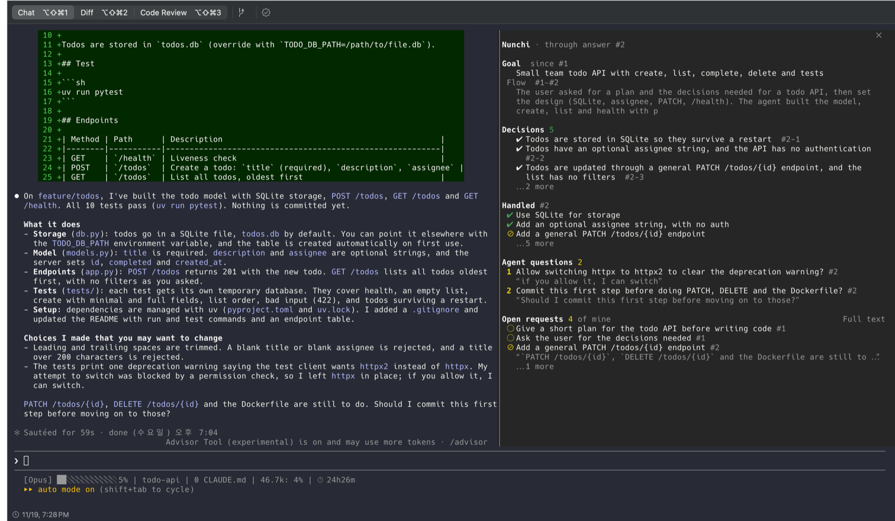

Claude Code
/nunchi는 설치된 눈치 Mod가 등록한 명령입니다. 같은 CLI에서 즉시 패널을 열고 이 세션의 분석을 켭니다. /nunchi off, status, language, build도 Mod에서 처리합니다. 명령 등록과 처리 코드
Claude 눈치에는 패널을 여는 명령과 클릭할 수 있는 버튼이 있습니다. 현재 Codex 실험은 런처로 화면을 열고, 별도 tmux 영역에 눈치 분석 결과를 텍스트로 표시합니다.
/nunchi 사용 가능. Codex의 $nunchi 스킬은 미구현.
› Synthetic test. The goal is a todo API. Use SQLite. Add CSV export. First, run printf demo-tool then ask me which CSV column order to use. Do not write files. • I’ll run printf demo-tool first. • Ran printf demo-tool └ demo-tool • printf demo-tool returned demo-tool. Which column order should I use for the CSV export?
눈치 #1 응답까지 반영 목표 · 할 일 API에 CSV 내보내기 제공 결정 사항 ✔ 할 일 API는 CSV 내보내기를 지원한다. #1-2 ✔ 할 일 API의 저장소로 SQLite를 사용한다. #1-1 처리 결과 #1 ○ 할 일 API 만들기 ○ SQLite 사용하기 ○ CSV 내보내기 추가하기 ✔ 먼저 printf demo-tool 실행하기 ✔ 명령 실행 뒤 CSV 열 순서 묻기 ○ 파일을 쓰지 않기 에이전트 질문 · CSV 내보내기에 사용할 열 순서 남은 요청 ○ 할 일 API 만들기 ○ SQLite 사용하기 ○ CSV 내보내기 추가하기 ○ 파일을 쓰지 않기
/nunchi는 설치된 눈치 Mod가 등록한 명령입니다. 같은 CLI에서 즉시 패널을 열고 이 세션의 분석을 켭니다. /nunchi off, status, language, build도 Mod에서 처리합니다. 명령 등록과 처리 코드
Codex 스킬은 /skills로 고르거나 $스킬이름으로 호출합니다. 눈치 스킬을 추가하면 $nunchi를 연결·상태 조회의 입구로 만들 수 있습니다. 패널을 열거나 닫으려면 스킬과 별도로 뷰어를 제어할 연결이 필요합니다. 현재는 실험 런처가 tmux 화면을 엽니다. Codex 공식 스킬 문서
| 상태 | Codex와 화면 | 눈치 분석 |
|---|---|---|
| tmux를 보고 있음 | 왼쪽 Codex와 오른쪽 뷰어가 함께 보입니다. 지금 코드의 뷰어는 0.5초마다 결과를 확인합니다. | 설정되고 신뢰된 훅이 완료한 턴을 예약합니다. |
| 일반 tmux에서 연결만 떼기 | 기본 키 Ctrl+B를 누른 다음 D. 터미널에는 화면이 사라지고, 유지되는 세션에는 tmux attach -t 세션이름으로 돌아옵니다. | Codex와 뷰어 프로세스는 백그라운드에서 계속 실행됩니다. 운영 중인 시스템과 tmux 서버가 유지되는 동안 적용됩니다. |
| 오른쪽 패널만 닫기 | 왼쪽 Codex에서 계속 대화할 수 있습니다. 실험 뷰어의 자동 재열기 기능은 미구현입니다. | 훅이 이미 해당 세션에 연결돼 있으면 새 완료 턴의 분석이 계속 예약됩니다. 결과 파일도 남습니다. |
| Codex 또는 tmux 종료 | Codex를 종료하면 왼쪽 프로세스가 끝납니다. tmux 세션을 종료하면 그 안의 두 프로세스가 끝납니다. | 그 세션에서는 새 응답이 생기지 않습니다. 저장된 결과는 남아 재개 후 다시 읽을 수 있습니다. |
일반 codex로 시작 | 평소처럼 대화합니다. 실험 화면은 자동으로 열리지 않습니다. | 현재 훅은 런처의 연결 정보가 없는 세션을 기록하지 않습니다. 설치 후 일반 실행과 연결하는 기능은 다음 구현 범위입니다. |
지금 열어드린 macOS 터미널 데모에는 종료 정리가 붙어 있습니다. 데모 창이 닫히거나 연결이 정상적으로 끝나면, 전용 tmux 세션과 임시 로그인 사본을 정리합니다. 위의 일반 tmux 백그라운드 유지 동작은 데모 종료 시 적용되지 않습니다. tmux 연결과 분리
| 조작 | Claude 눈치 | Codex tmux 오른쪽 뷰어 |
|---|---|---|
| 더 보기 · 접기 | 지원버튼으로 결정·처리 결과·남은 요청을 펼치고, 지난 질문을 열 수 있습니다. | 미구현표시된 항목을 텍스트로 읽고 터미널에서 스크롤합니다. |
| 긴 글 펼치기 | 지원잘린 항목이 있으면 해당 구역의 펼치기와 줄이기가 동작합니다. | 미구현tmux 창 너비에 따라 텍스트가 감깁니다. |
| 링크 클릭 | 지원패널 안 링크는 Claude Mod의 Link 요소로 렌더링합니다. | 뷰어 기능 미구현텍스트 URL의 링크 인식은 터미널 앱 기능에 따릅니다. |
| 프롬프트 복사 | 지원열린 빠뜨림·어김이 있을 때 프롬프트 복사가 고침 요청 문구를 만듭니다. 복사 실패 시 드래그할 수 있게 문구를 펼칩니다. | 미구현⚠과 빠뜨림·어김 문구를 표시합니다. 고침 요청 생성과 복사 버튼은 없습니다. |
| 일반 텍스트 선택·복사 | 가능본문은 드래그 가능한 일반 텍스트로 그립니다. | 가능tmux 복사 모드로 선택한 줄을 tmux 버퍼에 담았습니다. OS 클립보드로 보내는 방법은 터미널 선택·복사나 tmux 설정에 따릅니다. |
앞서 정한 결정이 지켜지지 않았어. 결정: "저장소는 PostgreSQL로 한다". 어긋난 점: 응답에서 SQLite로 구현했다고 했어. 결정대로 고쳐 줘.
공통 눈치 엔진의 열린 빠뜨림·어김 결과를 읽어, 관제 UI에 펼치기와 프롬프트 복사 버튼을 두는 방식이 맞습니다. 그러면 Claude와 Codex 세션에서 같은 UI를 쓸 수 있습니다. 현재 HTML의 복사 예시는 동작 설명입니다.
claude plugin test mod/nunchi로 버튼 이벤트, 링크 요소, 복사 API의 성공·실패 응답을 확인했습니다. 물리 마우스 클릭과 OS 클립보드는 이 테스트 환경에서 대신 처리합니다. 테스트 코드 · Claude Mod 테스트 문서